An administrator or an editor with the correct permissions can work with Page Layouts. There are two levels which will normally need different permissions:
The prerequisite is that the page is a Quick Page.
You can't use this kind of Page Layout on a standard Sharepoint Page - a page where "Enable legacy web parts" is on.
Here we will describe the Layout Designer. For an instruction on how to use the Page Designer, see:
Besides that, there are settings in Omnia Admin where an administrator can select the Page Layouts to be available for the active site collection, see:
Do the following:
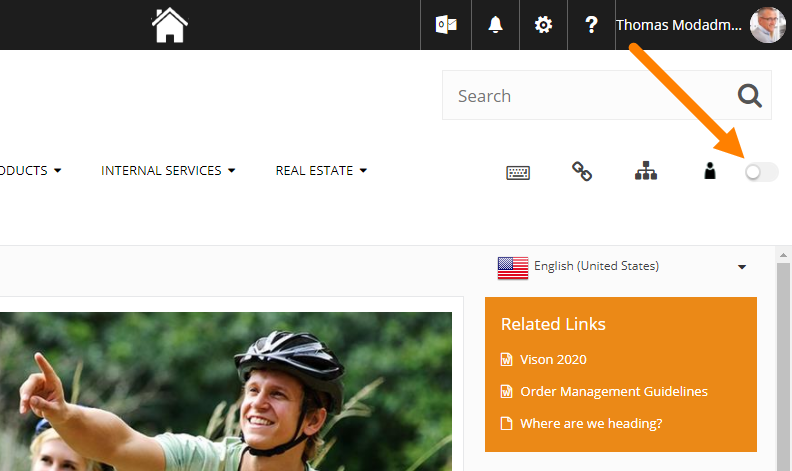
If you have the correct permissions something like this will be shown:
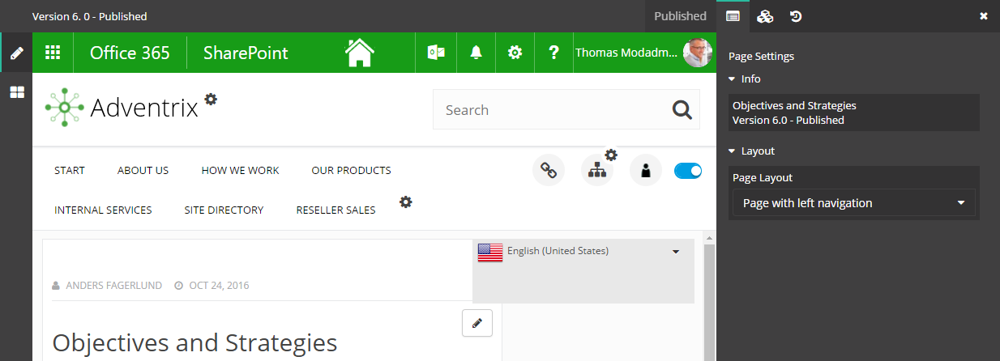
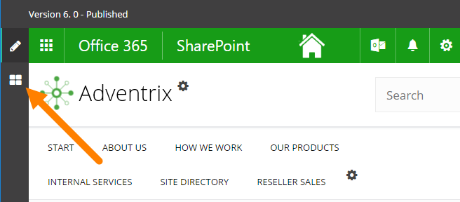
You can now select Page Layout for the page, edit the Page Layout or create a new Page Layout.
To select a Page Layout, do the following:
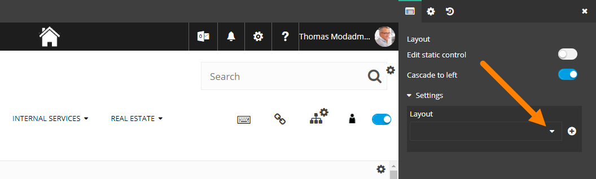
If more than one Page Layout is available, you can change page layout for a page this way. You must publish to apply the layout change.
Note! If blocks already are added to the page, they will normally realign to the new layout. If that is not possible, all blocks will be placed in one single Zone. You then have to drag the blocks to the correct Zones.
To edit a Page Layout, do the following:
Note! You can only edit Page Layouts created by you or another administrator. Layouts that are implemented when the Intranet is installed can't be edited (but can be selected).
Something like this is shown:
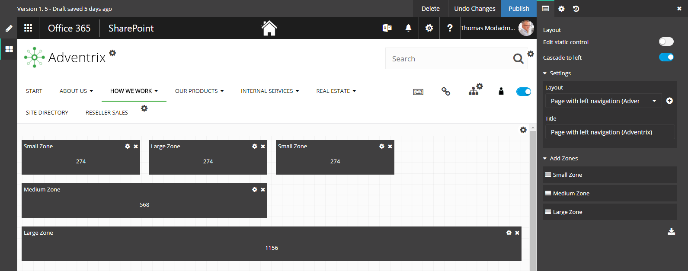
You can now add, edit or delete Zones. You must publish to apply the changes.
When you edit an existing layout you can choose to save your edited layout as a new template, see below. You don't have to publish to be able to do that.
To create a new Page Layout, do the following:
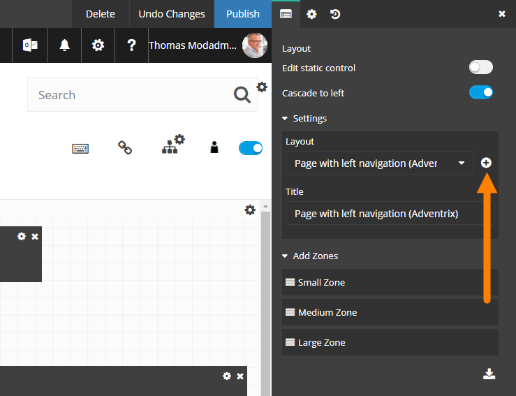
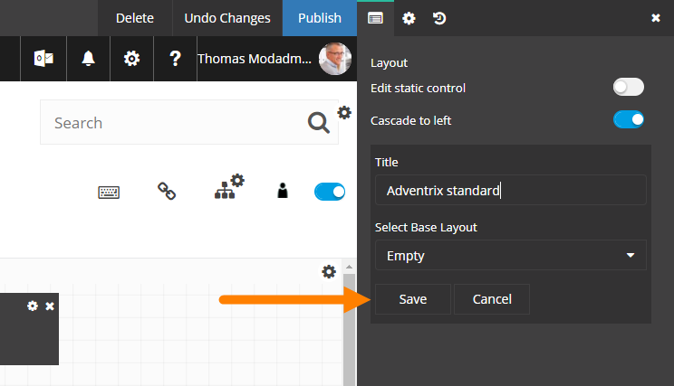
Note! When you publish, the selected page layout will be applied for the active page.
When you edit a layout there can be static controls, that can't be edited or moved by the editor. As default they are not shown. If you want to see where they are, click "Edit static control".
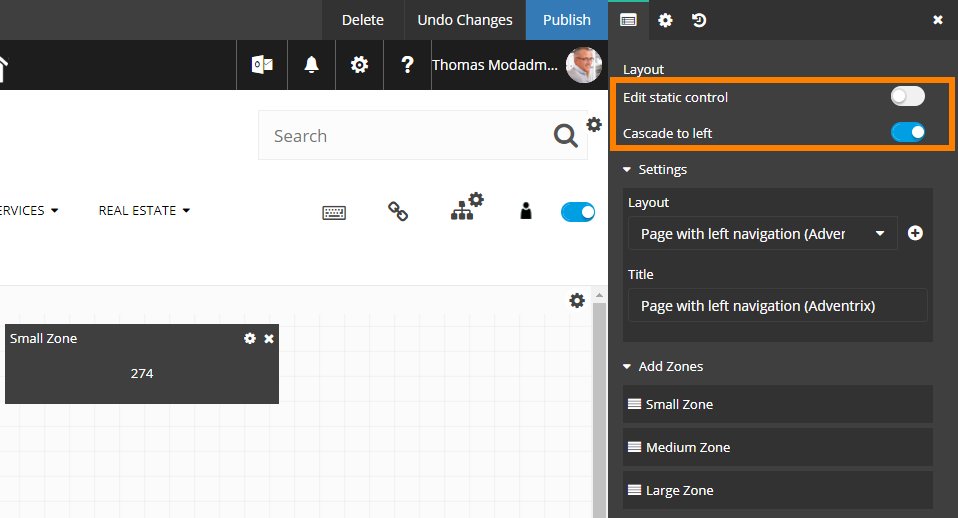
When you add a new control, it is, per default, aligned (cascaded) to the left. If you don't want that, click "Cascade to left" to deselect that option.
You can delete a Page Layout, undo tha changes you have made and publish the changes, by using the buttons at the top:
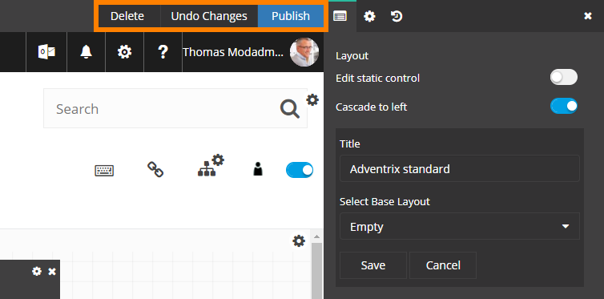
When you have made all the changes, you can choose to save the layout as new layout template (base layout). You don't have to publish to be able to do that.
Add a new name for the layout and then click Save.
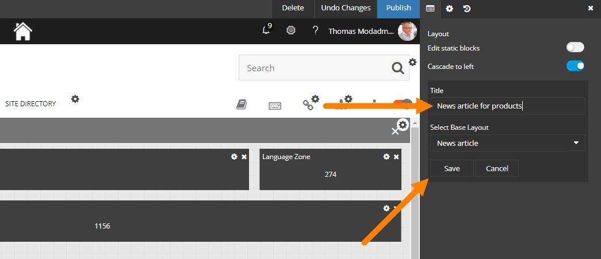
You can continue working on the page, adding blocks and so fort, and publish when you are done.
When you do any change to a Page Layout, a Version History node is created. You can use the Version History to go back to any earlier edition of the Page Layout.
Published editions are noted with an integer, work in progress with a decimal.
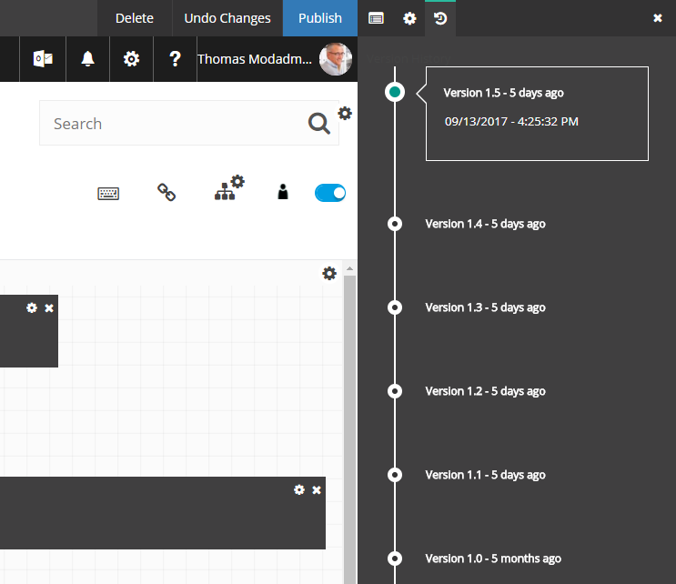